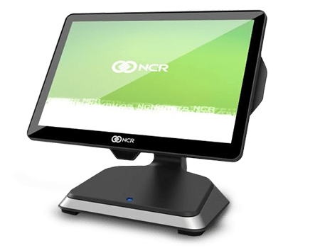

Work

Abstract/Introduction
NCR is an American based software and technology company. The company has produced a variety of products focused on enhancing consumer and retail payment solutions. While they are not widely known to consumers, retailers often use their products; you might notice that many debit/credit machines you use are typically branded as NCR. The office in waterloo focuses on processing transactions created by a consumer at a bank, aiming to enhance not only the consumer experience, but also employee productivity.
Information about the Employer
As briefly mentioned above, NCR Waterloo focuses on enhancing consumer and employee experience for banking. I was a part of one of the multiple agile development teams belonging to the TxFoundation group. My role on the team was mainly assisting full time developers and taking on any roles needed by the team. During the first few months, I took the time to understand the codebase and get myself up to speed and handle any tasks given to me more fluidly. Simply attempting to learn the code interactions inside the project helped me understand how complex a product can get, despite what seems simple at a higher level. This was apparent when making a change in one part would result in an error being thrown from a completely different microservice. My role in the team shifted during the 2nd term, as the QA was moved to the other team, allowing me to experience not only development, but also investigate the relation between the business side of the product, and the codebase and how to test for the final product rather than simply testing invalid inputs. Additionally, throughout both my terms at NCR, working in an agile team gave me exposure to working as part of a team and helped develop my ability to communicate with different people.
Goals - Term 1
During my first work term, my goals were centered around understanding and working with the codebase that was given to me. My first two goals concentrated on understanding the technology stack used, and the interactions between these different softwares. These goals gave some direction for the area I wished to focus my learning on during the first few months. My third goal focused on my soft skills, specifically my ability in communicating with others. While I’m not sure whether I consider this goal completed, as I still believe there is more room to grow, I do believe I improved vastly during my time at NCR. My fourth goal was more of a challenge; I would give myself some time after every problem before I would ask for help, allowing me to understand and attempt a solution before obtaining the solution from my coworkers. This goal gave me insight into why some problems exists and allowed me to understand the solution at a better level. My final goal was one designed to set me up for future work: understanding the time takes to get a problem, then design and implement the solution. Understanding the time it takes to complete your work is an incredible asset, allowing others to schedule around you more efficiently. My schedule was still wonky in term 1, but I believe this goal had much more improvement during term 2.
Goals - Term 2
My goals in term 2 were designed to give me room to explore the product. My first term was focused on understanding why the product was the way it is; my second term is about understanding flaws and why the product should be changed. To begin, my first goal was to join the coding standards committee and understand any mistakes others developers may have made, as well as getting a first hand account of the proposed solution. I joined the standards committee, and my conversations with my coworkers from other agile teams allowed me to learn the reservations in the style of coding done at NCR. My 2nd goal was focused on using the extensive functionality of git. During my first term, I noticed a weakness of mine; during one of my sprints, I was asked to revert one of the files. I couldn’t figure it out and I ended up just redownloading that specific file. However, after learning git through online tools, I now have a much deeper understanding of version control, which will assist my greatly in my future endeavours. My final goal was to learn documenting the changes you make to the product, to see how to word your code changes to those who have not seen the implementation. There were more hiccups here, although I did get more experience in this regard.
Achievements
During my time at NCR, the company hosted a global hackathon. I partnered with three other coops and worked outside my responsibilities to develop an app using ReactJS and Microsoft Azure (which I can unfortunately not speak additional details of as it is intellectual property of NCR). We were fortunate enough to advance into the global finals, beating out nearly 400 teams, and as a result, we received a monetary reward for our placement.
Conclusions
In conclusion, I learned a lot at NCR. Personally, my biggest take away from NCR was soft skills, as well as working on a product with many different people. I also gained experience in workflow and developed my technical knowledge immensely. I will always be grateful for my time at NCR.
Acknowledgments
My acknowledgements go out to my team who worked with me and brought my up to speed, not just as someone working at NCR, but as an employed developer working for a company. I’d like to personally thank everyone in Delta (who will not be named for the sake of privacy)..